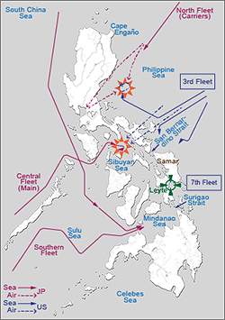

|
j
a v a s c r i p t |
Pg.1/2
October 26, 1944

Oct 22-24, 1944
(Click for 1947 track resolution) A hectic day as all Manila waited breathlessly for the morning version of the Leyte Naval Battles. The Nimitz announcement that it had engaged three separate Japanese Naval Fleets made it apparent that this was Japan's most ambitious naval action of the war, so the concern was justified. Admiral King said that almost the entire Japanese Navy took part. What he omitted was that the Japanese almost succeeded in scoring an outstanding upset ... but not quite. The advantages were ALL on their side: choice of initiative, freshness of forces, superiority of numbers and the aid of land-based planes. That the Americans beat back this tremendous force testifies to their guts, superior strategy and equipment. Trying to piece the story together from Radio Tokyo is impossible. The reception was clear as a bell but the announcements mixed past results with a bewildering number of exploits such as transports sunk, set ablaze, put out of action, set aground and damaged. The Tribune, for its part, datelined Tokyo, October 25, said, "U.S. Task Force and Convoy suffer heavy blow east of P.I." — the cockiest bull story ever dished out, clearly demonstrating that the Japanese have no faith in a victory, even before the engagement has been decided. So I'll stick to what I can figure out from U.S. radio reports. The Japanese came in three fleets. The first two units had no carriers but the heavy guns of battleships and the usual cruisers and destroyers. The first force came in from the Sulu Seas to try and enter Leyte Gulf from the Surigao Strait. The second unit came through the Palawan Passage into the Sibuyan Sea, aiming to pass through the San Bernardino Strait and close a pincer movement by meeting the first force in Leyte Gulf. This, the Japanese strategists figured, would enable the battleships to leisurely destroy MacArthur's forces and supplies on and off the Leyte beaches. The third force was coming from Formosa with four carriers and two battleships but few planes. Or their planes might have flown ahead to attack from land bases (these planes sank the Princeton). |
|
|
|
|